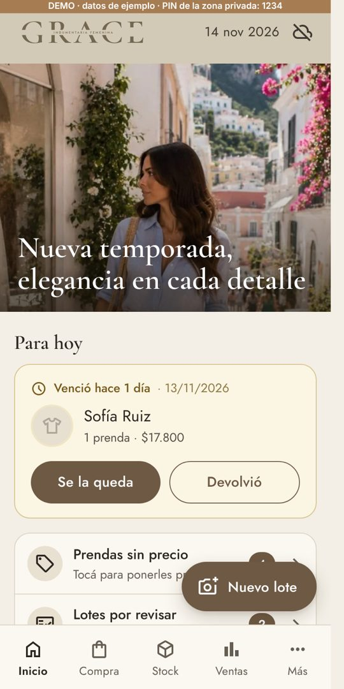

Grace Indumentarias
Una app para celular que una persona real usa todos los días para llevar su negocio de ropa: compras por lote en Chile, stock con fotos, ventas, pagos, deudas y balance, con las ganancias calculadas en pesos chilenos, argentinos y dólares.
- Interfaz
- React 18, Vite y Material Design 3, con letra grande y pasos cortos.
- Datos
- Supabase con PostgreSQL: 10 tablas, migraciones SQL versionadas, seguridad RLS y fotos en almacenamiento privado.
- Sin conexión
- Sigue funcionando sin internet (IndexedDB, localStorage y Service Worker) y sincroniza entre celulares.
- Privacidad
- Sesión obligatoria y PIN para ver costos, ganancias y deudas.
- Calidad
- Más de 30 archivos de pruebas automáticas con Vitest, ESLint, Prettier y publicación continua en Netlify.
La demo usa datos inventados y no toca ninguna base: podés tocar todo. El PIN de la zona privada es 1234.
